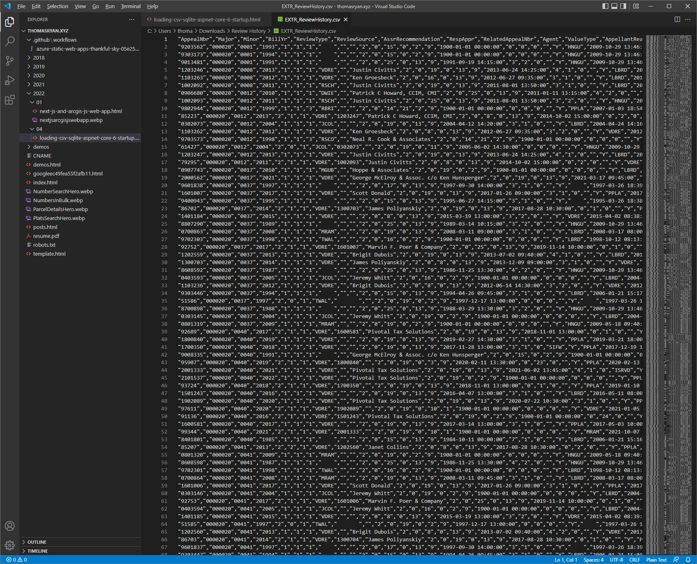

Load a CSV into SQLite on Startup in ASP.NET Core 6
When I deploy my ASP.NET Core 6 app I want it to gather CSV formatted data and ingest it into SQLite as part of its startup process. To that end I keep a list of the URLs and file names of the CSVs I want it to ingest in the appsettings.json file. These are then downloaded as required by the data ingest process, parsed using the CsvHelper library, and then inserted into SQLite.
After the startup process is complete, EF Core is used as the ORM to query SQLite just like it would be in any other app.
To accomplish this I create an instance of my EF Core database context before I call CreateHostBuilder(args).Build().Run(); to start up the app. Using that context, I can check to see if there’s any data in the app’s database. If there is, then we do nothing. If there isn’t, then we ingest the data we want into the database.
Performant CSV Parsing
A text file containing comma separated values or a CSV is a common way to store data exported mainframes or other complex and often obscure systems. CSV’s are neat because they are so simple, just a line of values separated into columns by commas, where the first row of values are the names of the columns. CSVs can be quite small with just a couple hundred rows and a file size measured in kilobytes. But they can also scale way up into multi-gigabyte files with millions of rows.
At smaller sizes how you handle them in C#, parse data from them, and then load them into your database doesn’t matter. But when this process starts taking minutes and tens of gigabytes of memory to complete; it’s now worth it to invest some time in improving the performance of your ingest process.
I’m using the CsvHelper library to parse each row of the CSV into an object. CsvHelper
is cool because
minimizes the memory footprint of CSV parsing by only parsing one row at a time and then forgetting the
prior row when you move to the next one. It also rids us of doing the busy work of manually serializing the
fields in our csv. Rather we can use the column names to create a class that models our csv’s columns and
then use csv.GetRecords
EF Core isn’t for Bulk Inserts
My app uses EF Core 6 to handle database interactions and SQLite to store its data. Unfortunately, this is not a good combination if your goal is to quickly and efficiently ingest data from a CSV file. Using EF Core to insert rows in bulk requires you to pay a penalty both in terms of memory consumption from entity tracking and in the amount of time required to ingest all the data. To avoid paying these penalties we can skip over our ORM and interact directly with SQLite using the underlying database connection.
We can use the database context EF Core provides as a starting place. The ingest function I run when the app starts up takes 3 parameters, the database context from EF Core, the URL of the csv to download, and the name of the specific file we want the app to parse and load into our database.
From the database context we can create a transaction by calling var transaction = await context.Database.BeginTransactionAsync(). Then we can create a command to execute in this transaction by calling Database.GetDbConnection().CreateCommand(); Finally when we're done with our command we can submit it to the database by calling await command.ExecuteNonQueryAsync(); and then when we are done with all the commands in our transaction we can close it out by calling await transaction.CommitAsync();
Old-school SQL Commands
Inside of the SQL command we can set a template using command.CommandText to set a string. The string you use will be specific to the version of SQL that the underlying database supports. SQLite uses the format discussed here for insert statements. For the values statement in our SQL command we will prefix each column name in the command text with a ‘$’ to mark it as the text to be swapped with the value of a matchingparameter.
We can create an SQL parameter by calling var parameter = command.CreateParameter(); Then will need to assign it a name so it knows what text to match against in the CommandText. I've combined the name of the column with the prefix character ‘$’ to form “$Id” as the name of the parameter. Finally we can add this parameter to our SQL command by calling command.Parameters.Add(parameter); We repeat this process for all of the values that we want to submit to SQLite in our insert command.
Read rows asynchronously and only once
Now that our database transaction and command are prepared, we need to grab data from the csv. To do this
we’ll use the csv.GetRecordsAsync
Inside of this foreach loop we can use the values from the current row in the csv as the values of the parameters in the SQL command. We can also do validation on the values parsed by CsvHelper and set out own values like a table specific Id for the row and a timestamp to record when it was ingested. Then to submit this row to SQLite we’ll call await command.ExecuteNonQueryAsync(); because this is not a query and it will not return results.
No more time or memory wasted
Once we’ve submitted all of the rows in the csv to SQLite we can close out the transaction by calling await transaction.CommitAsync(); You can see an example of this whole process in the Gist below. Prior to using these techniques, it took multiple hours and tens of gigabytes of memory to ingest all the data my app needs to run. Now it takes half an hour and less than a gigabyte of memory to accomplish the same work.